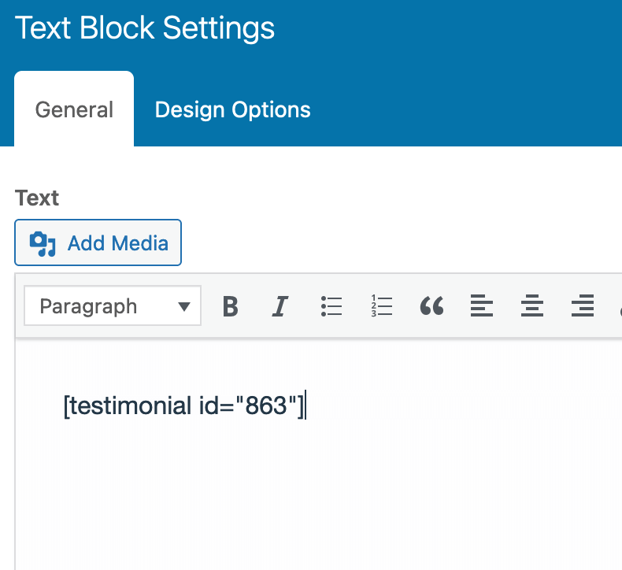

Documentation
WVRC Digital SMB Theme v1.2
Client Use Guide
- Version: 1.2
- Author:Joshua Reeves - Lead Developer
- Created: 14 July, 2021
- Update: 10 October, 2022
If you have any questions that are beyond the scope of this help file, Please feel free to email via Support Page.
Installation N/A
Structure
WVRC follows a simple and easy to customize structure for custom code and page builders. The following is a list of the main elements used in the template.
-
Colors and Layout
The Theme Customizer:
You can access the theme customizer from the Dashboard > Appearance > Customize or from the front end as shown below
{kind=link}
{kind=link}
{kind=link}
Color Schemes
The colors chosen are as follows:
- color_accent
- color_accent_text
- color_header_text
- color_header_text Alpha 20%
- color_header_headings
- color_intro_text
- color_intro_text Alpha 20%
- color_intro_headings
- color_intro_overlay_background
- color_intro_overlay_opacity
- color_intro_widgets_background
- color_intro_widgets_text
- color_intro_widgets_text Alpha 20%
- color_intro_widgets_headings
- color_content_text
- color_content_text Alpha 20%
- color_content_headings
- color_footer_background
- color_footer_text
- color_footer_text Alpha 20%
Theme Customization
Customization to the theme itself is not recommended at this time. The Customizer can allow you to change the width of content and the colors above, but we have selected and placed the chosen colors and the best widths for viewability.
Changes to Menus will likely be necessary. So Please do see the Menus section
Logo Settings
The Logo Container can be found in Customizer -> Site Indentity
Layout
Documentation and examples for header, navbar, sidebar, footer
Front Page
The Front page is defined in Settings > Reading, currently set to the page title "Home"
Anatomy:
{kind=link}
-
1. The copy here is taken from the page Excerpt in the editor. If you want to change the copy, edit the page and change the Excerpt.
Currently, the copy is formatted in this way:
<h2>The Experts in<br> Voice Solutions</h2> <div class="typewriter"> <h3><span class="erased"></span> Hands-Free, Eyes-Free™ <br> <span class="typed">Distribution</span> </h3></div> <p>As the industry leader in voice-enabled workflow solutions, Mountain Leverage is laser-focused on helping our partners achieve peak performance in distribution centers of all sizes. </p> <a href="/solutions" class="btn button">Find Your Solution</a>the `h2` contains a `br` tag to control where the line break happens
the `div` contains a `span` with the class `erased` and a `span` with the class `typed`, allowing the typed content to be changed using a list and the typewriter effect
the `p` contains the led-in copy
2. the button is a standard `a` tag link styled as 'btn button', the `href` can be changed to any page slug
3. Intro Widgets:
The three boxes overlapping the Hero section are the Intro Widgets. These can be edited by visiting Dashboard > Appearance > Widgets > Intro Widgets

{kind=link}
Content
Documentation and examples for displaying titles, summaries, featured images, etc
Titles
Page titles and section titles have the option for an Alternative Title and a Kicker
Page Title in Intro
{kind=link}
To set the Alternate Title and Kicker, scroll to the bottom of the page editor
{kind=link}
You will find the Alt Title and Title Kicker Custom Fields there. The Kicker is the small text on top of the Title.
Sections
To create the layout as intended, we use Sections to break up the different... sections of content.
We use the big "+" plus sign at the top to add a Section, then within that we add a Row with appropriate columns.
If you're using a background in the sections, you'll use 1/3 - 2/3 columns and the image is on the side with 1/3
Images
Image Sizes are, by default, as follows:
| Size name | Size parameters | Theme usage |
|---|---|---|
| Thumbnail size: | 744 × 418, cropped | In posts list. |
| Medium size: | 744 × 0, scaled |
As featured image preview on single post page. In list of child pages. |
| Large size: | 1200 × 0, scaled | Not used in the theme. |
reykjavik-intro: |
1920 × 1080, cropped | In page intro section. |
Working with image ratios - Example: blog post images
{kind=link}
The image at the top uses the following styles:
{
width: 100%;
height: 240px;
object-fit: cover;
object-position: top center;
}
This means they take up 100% of the allotted 33-50-100% of the article area available depending on screen size, the height is set to 240px, the image will stretch to fit the area, and will favor the top center of the image used.
In practice, this makes the ideal aspect ratio 16:9 with a safe area the center 83% of the width. Avoid images where the focal point is with 8% of the edges.
Background Images
The best background image is an image with no important focal point. These images are meant to have content block them and obscure parts at times and not be visible at others.
Favoring repeating designs or images with a more abstract feel like a highway, forest, mountainscape, assembly line, etc still allows for setting the tone of the content.
If a subject needs to be featured, it is good to use the Image or Photo elements in the builder or editor and place the subject in the center for headshots or favoring the inside of the the lateral thirds to ensure the subject is visible in all elements.
Components
These are the custom components related to Mounatin Leverage's layout system
Section Backgrounds
Sections can have a background image with either a dark or light background, left-to-right or reversed
Simple content can have a patterned bacground as well
The css below will modify the Sections with the desired visual effect:
-
bg-underThis allows a background image and overlays the section with a white to semi-transparent gradient overlay

-
reverseReverses the image and gradient direction so you can put the text on the right side every other section to create a checkerboard effect throughout the content
-
mediumThe dark background has been toned down to be a medium dark color gradient fading to semi-opaque
-
dark-bgThis tells the text to be lighter to contrast the dark background. It's built into the `medium` class in most places, but it acts as insurance in the page builder
In the previous example, you can see how they could all be used together.
-
patternedWhen a background is too much and plain white is too plain, use this subtle 'signal pattern' with a gradient revealing the pattern at the bottom
-
testimonialUse withdark-bgA unique dark background with a gold border on top to denote a testimonial
{kind=link}
{kind=link}
{kind=link}
{kind=link}
{kind=link}
{kind=link}
{kind=link}
With the css in place, you can use Design Options to choose the image to use
{kind=link}
Remember to stretch the section
{kind=link}
Testimonials
Picking up where we left off, Testimonials can be created in the Testimonials menu from the dashboard
Dashboard > Testimonials
It's recommended to copy one of the created testimonials and follow the format
To call a testimonial, use the following steps:
Testimonials themselves are called in using a shortcode
[testimonial id={enter ID}]
-
Find the ID by going to the Testimonial in the admin and searching by keyword
-
Click on the Testimonial you want to use to get to the editor
-
Copy the ID from the URL
-
Add the shortcode in a Text Area inside a single Column, in a Row, within a Section. Add the CSS class
testimonialdark-bgor you can usepatterned
{kind=link}
{kind=link}
{kind=link}
{kind=link}
Job Listings
Jobs are posted by going to
Dashboard > Jobs
It's recommended to copy one of the created jobs and follow the format
Changelog
See what's new added, changed, fixed, improved or updated in the latest versions.
Version 1.1 (tbd))
Version 1.0 (2 April, 2023)
Initial Release